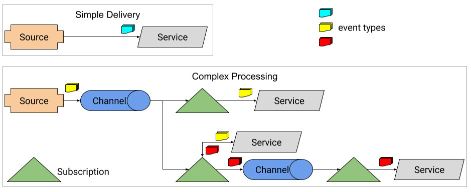

Eventing（事件）
到目前为止，向应用程序发送基本的 HTTP 请求是一种有效使用 Knative 函数的方式。然而，无服务器的松耦合特性同时也适用于事件驱动架构。也就是说，可能在文件上传到 FTP 服务器时我们需要调用一个函数；又或者，在我们进行物品销售时需要调用一个函数来处理支付和库存更新的操作。与其操心我们的应用程序或函数监听上述事件的逻辑，不如当那些被关注的事件发生时，让 Knative 去处理并通知我们。
如果要自己实现这些功能则需要做很多工作并要编写实现特定功能的代码。幸运的是，Knative 提供了一个抽象层使消费事件变得更容易。Knative 直接提供了一个“事件”，而不需要你写特定的代码来选择消息代理。当事件发生时应用程序根本无需关心它来自哪里或发到哪去，就是这么简单。为实现这一目标，Knative 引入了三个新的概念：Source（源）、Channel（通道）和 Subscription（订阅）。
Sources(源)
如你所料，Source 是事件的来源，它是我们定义事件在何处生成以及如何将事件传递给关注对象的方式。例如，Knative 团队开发了许多开箱即用的源。举几个例子：
GCP PubSub （谷歌云发布订阅）
订阅 Google PubSub 服务中的主题并监听消息。
Kubernetes Event （kubernetes 事件）
Kubernetes 集群中发生的所有事件的反馈。
GitHub
监视 GitHub 存储库中的事件，诸如版本的 pull 请求，推送和创建发布。
Container Source （容器源）
如果你需要创建自己的事件源，Knative 还有一个抽象---容器源。这允许你轻松创建自定义的事件源，并打包为容器。请参见第六章中的“构建自定义事件源”部分。
虽然这只是当前事件源的子集，但清单在不断的快速增长。你可以在 Knative Eventing 文档中的 Knative 生态系统部分查看事件源的当前列表。
让我们来看一个使用 Kubernetes 事件源并将结果输出到标准输出的简单案例。我们将部署一个运行在 8080 端口上用于监听 POST 请求并输出请求结果的函数，如例 4-1 所示。
例4-1: knative-eventhing-demo/app.go
package main
import (
"fmt"
"io/ioutil"
"log"
"net/http"
)
func handlePost(rw http.ResponseWriter, req *http.Request) {
defer req.Body.Close()
body, _ := ioutil.ReadAll(req.Body)
fmt.Fprintf(rw, "%s", body)
log.Printf("%s", body)
}
func main() {
log.Print("Starting server on port 8080...")
http.HandleFunc("/", handlePost)
log.Fatal(http.ListenAndServe(":8080", nil))
}
任何人都可以像我们一样部署此服务，如例 4-2 所示。
例4-2： knative-eventing-demo/service.yaml
apiVersion: serving.knative.dev/v1alpha1
kind: Service
metadata:
name: knative-eventing-demo
spec:
runLatest:
configuration:
revisionTemplate:
spec:
container:
image: docker.io/gswk/knative-eventing-demo:latest
$ kubectl apply -f knative-eventing-demo/service.yaml
到目前为止，不出意外的话，我们甚至可以像前两章那样向该服务发送下面的请求：
$ curl $SERVICE_IP -H "Host: knative-eventing-demo.default.example.com" -XPOST -d "Hello, Eventing"
> hello, Eventing
接下来，我们可以设置 Kubernetes 事件源。在配置和身份认证方面，不同的事件源则有不同的要求。例如，GCP PubSub 源则要求向 GCP 进行身份请求验证。对于 Kubernetes 事件源，则需要创建一个服务帐户，该帐户有权读取到 Kubernetes 集群内发生的事件。就像在第3章中所做的那样，我们在 YAML 中定义了这个服务帐户并将其应用到我们的集群,如例 4-3 所示。
例4-3: knative-eventing-demo/serviceaccount.yaml
apiVersion: v1
kind: ServiceAccount
metadata:
name: events-sa
namespace: default
---
apiVersion: rbac.authorization.k8s.io/v1
kind: Role
metadata:
creationTimestamp: null
name: event-watcher
rules:
- apiGroups:
- ""
resources:
- events
verbs:
- get
- list
- watch
---
apiVersion: rbac.authorization.k8s.io/v1
kind: RoleBinding
metadata:
creationTimestamp: null
name: k8s-ra-event-watcher
roleRef:
apiGroup: rbac.authorization.k8s.io
kind: Role
name: event-watcher
subjects:
- kind: ServiceAccount
name: events-sa
namespace: default
$ kubectl apply -f knative-eventing-demo/serviceaccount.yaml
随着 events-sa 服务帐户创建好后，剩下的就是定义我们的实际源，在我们的演示案例中是一个 Kubernetes 事件源实例。该实例将以一个特定的配置运行，在这个演示案例中则是一个预定义的服务帐户。可以看到我们的配置如示例 4-4 所示。
例4-4: knative-eventing-demo/source.yaml
apiVersion: sources.eventing.knative.dev/v1alpha1
kind: KubernetesEventSource
metadata:
name: k8sevents
spec:
namespace: default
serviceAccountName: events-sa
sink:
apiVersion: eventing.knative.dev/v1alpha1
kind: Channel
name: knative-eventing-demo-channel
其中大部分都相当简单，我们将创建的对象类型定义为 KubernetesEventSource，简称为 k8sevents，并传递一些特定实例的配置，例如我们应该运行的 Namespace (命名空间)和使用的 Service Account (服务帐户)。你可能已经注意到了一个新的东西，即接收器配置。
接收器是定义我们想把事件发送到的目的地和 Kubernetes 对象参考的一种方法。或者更简单地说，就是一种在 Kubernetes 中寻址到另一个预定义对象的方法。在 Knative 中使用事件源时，这通常是一个服务（如果我们想要将事件直接发送到在 Knative 上运行的应用程序），或者是一个尚未引入的组件——Channel（通道）。
Channel（通道）
现在我们已经为事件定义了一个源，则需要某个地方来接收它们。虽然你可以将事件直接发送到服务，这也就意味着你可以自己处理重试的逻辑和队列。当一个事件发送到你的服务并且它恰好关闭时会发生什么？如果要将相同的事件发送到多个服务，又该怎么办？为了回答这些问题，Knative 引入了 Channel 的概念。
通道处理缓冲和持久性，有助于确保将事件传递到其预期的服务，即使该服务已被关闭。另外，Channel 是我们代码和底层消息传递解决方案之间的抽象。这意味着可以像 Kafka 和 RabbitMQ 一样在某些服务之间进行消息交换，但在这两种情况下我们都不需要编写特定的实现代码。继续我们的演示案例，我们将设置一个用于发送所有事件的通道，如例 4-5 所示。你会注意到此通道与我们在示例 4-4 中的事件源中定义的接收器很像。
例4-5: knative-eventing-demo/channel.yaml
apiVersion: eventing.knative.dev/v1alpha1
kind: Channel
metadata:
name: knative-eventing-demo-channel
spec:
provisioner:
apiVersion: eventing.knative.dev/v1alpha1
kind: ClusterChannelProvisioner
name: in-memory-channel
$ kubectl apply -f knative-eventing-demo/channel.yaml
在这里，我们创建了一个 knative-eventing-demo-channel 的通道，并定义我们想要创建的通道类型，在该演示案例中则是一个 in-memory-channel (内存通道)。正如前面所述，Knative 事件的一个重要目标是它完全从底层基础架构中抽象出来，这意味着支持可插入通道的消息服务。这是通过 ClusterChannelProvisioner (集群通道提供者)一种用于定义 Knative 应如何与我们的消息传递服务进行通信的模式来实现的。我们的演示案列使用了内存通道配置程序，但 Knative 实际上也提供了一些选项来支持我们的通道服务：
in-memory-channe
完全在 Kubernetes 集群的内存中进行处理，不依赖于独立运行的服务来传递事件。非常适合开发，但不建议用于生产环境。
GCP PubSub (谷歌云消息发布订阅系统)
仅使用 Google PubSub 托管服务来传递信息但需要访问 GCP 帐户权限。
Kafka (分布式发布订阅消息系统)
将事件发送到正在运行的 Apache Kafka 集群，这是一个开源的集群分布式流媒体平台，具有出色的消息队列功能。
NATS (一个高性能的开源消息系统)
将事件发送到正在运行的 NATS 集群，这是一个高性能的开源消息系统，可以以各种模式和配置传递和使用消息。
尽管有了这些选项，但还有一个问题：我们如何实现从通道将事件发送到我们的服务？
Subscriptions（订阅）
我们将事件源发送到通道，并准备好开始处理它们的服务，但目前我们没有办法获取从通道发送到服务的事件。Knative 允许我们给这种情况定义订阅功能。订阅是通道和服务之间的纽带，指示 Knative 如何在整个系统中管理我们的事件。图 4-1 展示了如何使用订阅将事件路由到多个应用程序的示例。

图4-1. 事件源可以将事件发送到通道，以便多个服务可以同时接收它们，或者它们可以直接发送到一个服务
Knative 中的服务不了解或不关心事件和请求是如何获取的。它可以是来自入口网关的 HTTP 请求，也可以是从通道发送来的事件。无论何种方式，我们的服务仅接收 HTTP 请求。这是 Knative 中一个重要的解耦，它确保我们将代码编写到我们的架构中，而不是在于底层。让我们创建订阅，它将从我们的通道向我们的服务发送事件。正如示例 4-6 所示，该定义仅使用了两个引用，一个引用 Channel，另一个引用 Service。
例4-6: knative-eventing-demo/subscription.yaml
apiVersion: eventing.knative.dev/v1alpha1
kind: Subscription
metadata:
name: knative-eventing-demo-subscription
spec:
channel:
apiVersion: eventing.knative.dev/v1alpha1
kind: Channel
name: knative-eventing-demo-channel
subscriber:
ref:
apiVersion: serving.knative.dev/v1alpha1
kind: Service
name: knative-eventing-demo
到此，我们已经准备好了所有的通道，以便可以将事件发送到应用程序上。Kubernetes 会记录集群中发生的事件，事件源会将其发送到通道再发送到我们的服务，这要归功于我们定义的订阅功能。如果我们查看服务中的日志，可立即看到这些事件，如例 4-7 所示。
例4-7: 从服务中检查日志
$ kubectl get pods -l app=knative-eventing-demo-00001 -o name pod/knative-eventing-demo-00001-deployment-764c8ccdf8-8w782
$ kubectl logs knative-eventing-demo-00001-deployment-f4c794667-mcrcv -c user-container
2019/01/04 22:46:41 Starting server on port 8080...
2019/01/04 22:46:44 {"metadata":{"name":"knative-eventing-demo-00001.15761326c1edda18","namespace":"default"...[Truncated for brevity]
总结
这些构建块为帮助实现丰富、强大的事件驱动架构铺平了道路，但这仅仅是个开始。我们将在第六章的“构建自定义事件源”中使用 ContainerSource 创建自定义源。我们还将在第7章中展示事件。